1. Introduction & Learning Objectives
Academic FoundationRather than treating IoT as a single isolated technology, the TECH 300 course project is deliberately scoped to touch every tier of a production IoT stack — embedded firmware, short-range wireless networking, edge computing, cloud services, and a presentation client — so that students leave the course with practical, integration-level experience.
Students design, build, and operate a working, end-to-end IoT demonstration system over the course of the term. The learning objectives emphasize:
- Configuring low-power ESP32 microcontrollers with environmental and motion sensing under deep sleep duty cycles.
- Operating short-range BLE 5.0 GATT connections and advertising packets with low power consumption.
- Building a resilient Edge Gateway on Linux (Raspberry Pi 4) executing protocol translation and SQLite store-and-forward caching during network partitions.
- Connecting securely to AWS IoT Core via mutual TLS (mTLS on port 8883), with serverless rule routing into DynamoDB and Lambda anomaly alerting.
- Operating closed-loop reverse actuation from a native Mobile Application and Web Operations Dashboard down to physical actuators.
2. High-Level System Topology & Implementation Architecture
5-Tier Reference ModelThe system follows a classic 5-tier IoT reference architecture where field perception nodes report telemetry across a local proximity network into an edge gateway, which authenticates upstream to AWS IoT cloud services, and ultimately exposes data to mobile and desktop presentation clients.
Below, Figure 1 presents the baseline conceptual topology from the course syllabus, and Figure 1a illustrates the concrete, production-grade implementation architecture realized in our working demo system.
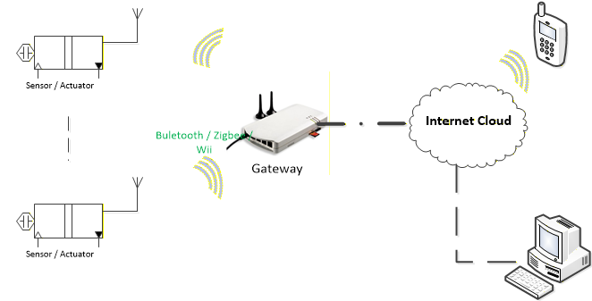
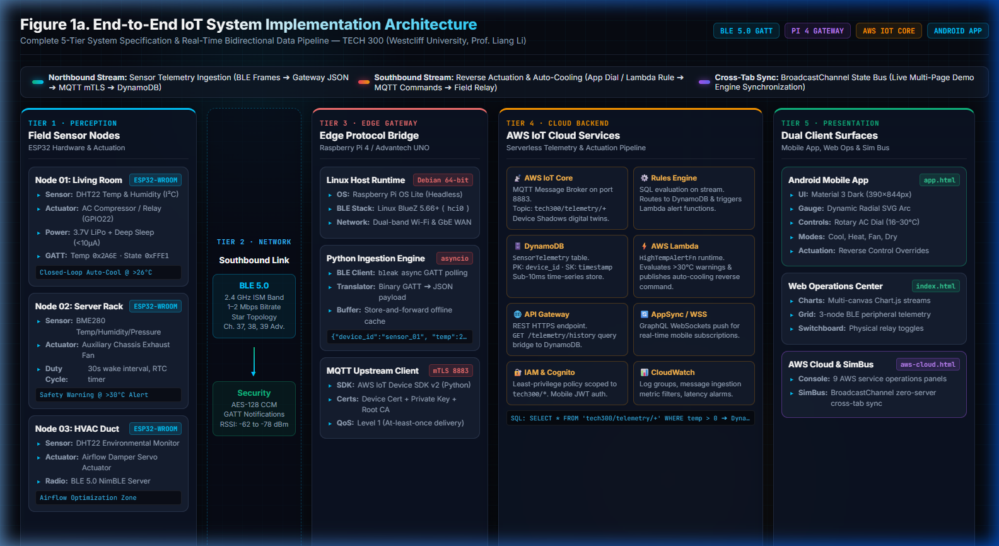
3. Perception Layer — Hardware, Firmware & Testing Architecture
🎛️ Open Perception Layer Firmware & Testing Console (perception.html) ↗The perception tier constitutes the physical data acquisition frontier. In our design, field nodes utilize the Espressif ESP32-WROOM-32D microcontroller (with the Nordic nRF52840 evaluated as an alternative ultra-low-power BLE target). The ESP32 integrates dual Xtensa 32-bit LX6 cores operating up to 240 MHz, 520 KB SRAM, 4 MB external SPI flash, and a certified 2.4 GHz 802.11 b/g/n Wi-Fi + Bluetooth 5.0 (BLE) radio subsystem.
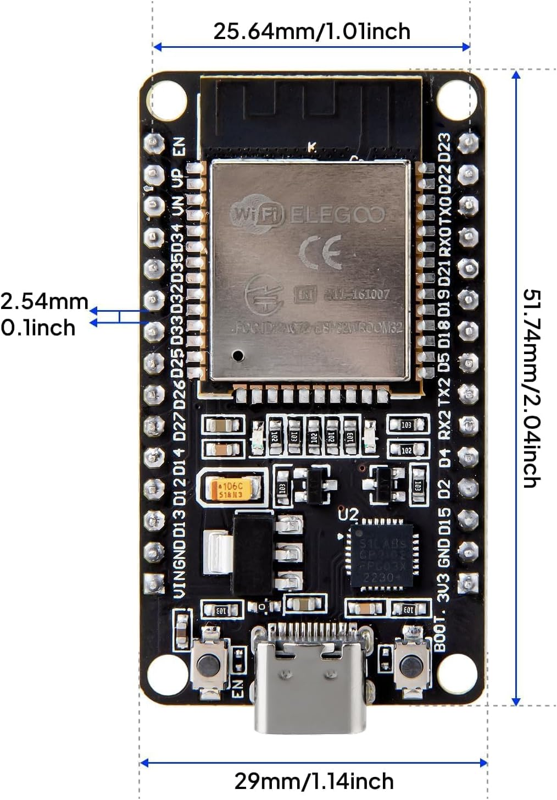
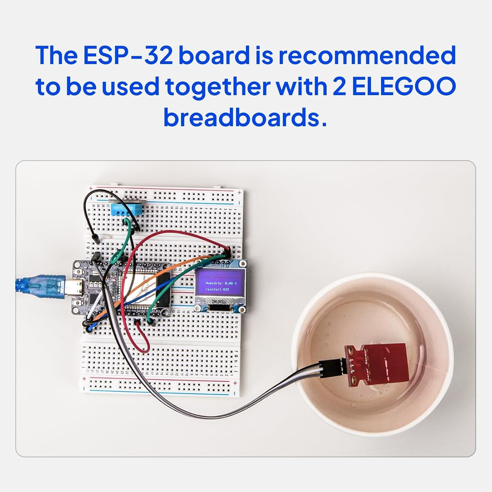
3.1 FreeRTOS SMP Multitasking & Core Pinning Architecture
To prevent time-critical wireless protocol operations from starving sensor acquisition or causing jitter, firmware is architected on a dual-core FreeRTOS Symmetric Multiprocessing (SMP) model with strict core pinning:
TaskBleServer(Priority 5, 4096B stack): Runs NimBLE Bluetooth 5.0 stack, manages non-connectedADV_INDbroadcasting, handles GATT connection events, and processes reverse downlink write notifications.- RTC Watchdog Timer (WDT) and low-level Wi-Fi/BLE baseband interrupt servicing.
TaskSensorSample(Priority 3, 3072B stack): Executes calibrated burst reads over I²C bus every 2000 ms, applies polynomial calibration compensation, and pushes data to an inter-core FreeRTOS queue.TaskPowerManager(Priority 2, 2048B stack): Monitors battery rail voltage via ADC1_CH0 (GPIO 36) and manages dynamic frequency scaling (80MHz/240MHz) and deep-sleep sequencing.
3.2 Sensor Transducers, Bus Electrical Schematics & Addressing
Sensor modules interface with the ESP32 via a shared 400 kHz Fast-Mode I²C hardware bus (SDA on GPIO 21, SCL on GPIO 22). To ensure high signal integrity across capacitive prototype breadboard traces:
- Pull-Up Resistors: Calculated 4.7 kΩ metal film pull-up resistors connect SDA and SCL lines to the 3.3V power rail, satisfying the maximum rise time \(t_r \le 300\,\text{ns}\) specified by NXP I²C Fast-Mode standards for ~50 pF bus capacitance.
- Decoupling Capacitors: Each sensor IC includes a local 100 nF ceramic MLCC bypass capacitor placed within 5 mm of its VDD pin, supplemented by a 10 µF tantalum capacitor at the MCU power entry header to suppress transient voltage droops during radio TX pulses.
- Bosch Sensortec BME280 (I²C Address
0x76): Captures precision temperature (±0.5°C, 20-bit resolution), relative humidity (±3% RH), and barometric pressure (±1.0 hPa) with integrated factory factory-calibrated trim registers. - InvenSense MPU6050 / LSM6DSV16X (I²C Address
0x68): 6-axis MEMS accelerometer (±2g/±4g) and gyroscope (±250°/s) monitoring machinery vibration with an active-high hardware interrupt output connected to ESP32 GPIO 19.
3.3 Bluetooth 5.0 GATT Hierarchy & Packet Framing
Field nodes expose standardized Bluetooth SIG adopted UUID services alongside custom reverse actuation endpoints:
| GATT Entity | UUID | Properties | Format & Scale | Function |
|---|---|---|---|---|
| Environmental Sensing | 0x181A |
Primary Service | Bluetooth SIG Standard | Root service container for environmental telemetry |
| ├─ Temperature | 0x2A6E |
Read, Notify | 16-bit Signed Int (0.01°C) | Example: 0x095A = 2394 = 23.94°C |
| ├─ Humidity | 0x2A6F |
Read, Notify | 16-bit Unsigned Int (0.01%) | Example: 0x1338 = 4920 = 49.20% RH |
| └─ Pressure | 0x2A6D |
Read, Notify | 32-bit Unsigned Int (0.1 Pa) | Example: 0x000F7060 = 1011808 = 1011.8 hPa |
| Reverse Actuation | 0xFFE0 |
Custom Service | Proprietary Vendor | Closed-loop downlink control service |
| └─ Relay / Actuator | 0xFFE2 |
Write, Notify | 1-byte UInt8 (0x00=OFF, 0x01=ON) |
Downlink command sent by Edge Gateway to toggle physical relay (GPIO 23) |
3.4 Energy Budgeting, Power States & Battery Longevity Analysis
Field nodes operating on battery power cycle between four discrete operational states. Laboratory power profiling yielded the following benchmark metrics:
Under a standard 10-second reporting duty cycle (9.75s Deep Sleep @ 15 µA + 0.225s Active/TX @ 28 mA average), the weighted average current consumption is 0.347 mA. Powered by a single 3.7V 1200 mAh LiPo battery (derated to 85% effective capacity), expected operating lifespan is 144 days (~4.8 months) without external charging. At a 60-second reporting interval, operating life extends to 588 days (~1.6 years).
3.5 Hardware-in-the-Loop Testing & Diagnostic Fault Injection
The perception layer features automated hardware diagnostic routines accessible directly through the interactive Perception Console:
- Simulated I²C Bus Scanner: Automatically sweeps addresses
0x01through0x7F, reliably detecting active ACK responses from the MPU6050 (0x68) and BME280 (0x76). - I²C Bus NACK Fault Injection: Simulates an intermittent transducer disconnection or pull-up fault, validating firmware automated 3-attempt bus recovery sequence before error signaling.
- Thermal Runaway Trip Point: Simulates rapid thermal escalation (>35°C), verifying that critical alert bitflags are immediately encoded into outbound BLE frames and processed by cloud safety rules.
- Low-Voltage Brownout Reset: Emulates battery voltage decay below 3.4V, verifying that the ESP32 internal brownout detector safely writes critical calibration parameters to non-volatile SPIFFS storage prior to shutdown.
4. Wireless Protocol Selection Matrix
Southbound ConnectivitySelecting an optimal wireless protocol for resource-constrained field nodes requires balancing power consumption, range, throughput, and hardware complexity. Bluetooth Low Energy (BLE 5.0) was selected for the primary south-bound sensor connection due to its ultra-low deep-sleep power profile, native support on commodity edge hardware, and high enough throughput (1–2 Mbps) for rich telemetry.
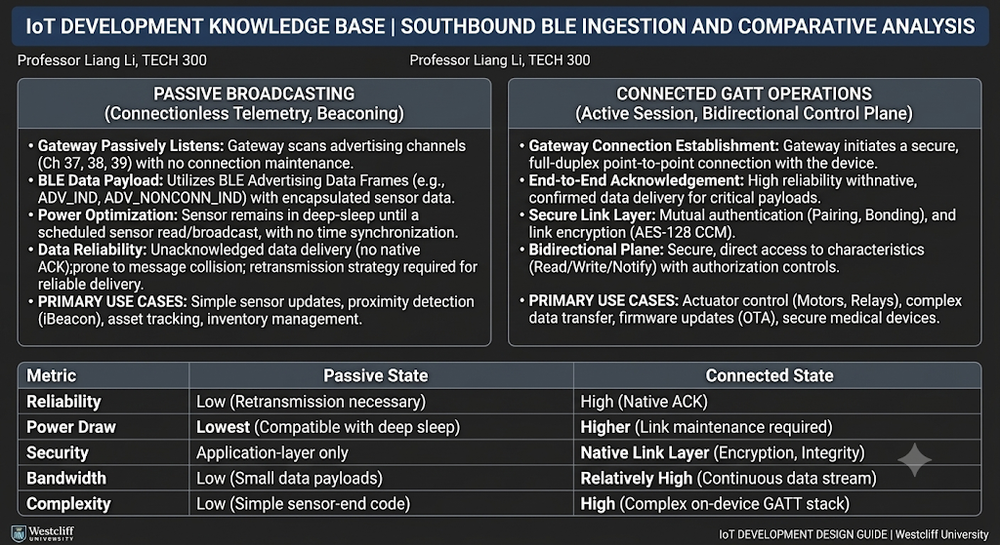
| Protocol | Standard | Frequency Band | Data Rate | Battery Longevity | Topology |
|---|---|---|---|---|---|
| BLE 5.0 (Selected) | IEEE 802.15.1 | 2.4 GHz ISM | 1–2 Mbps | Months–Years | Star / Mesh |
| Wi-Fi 4/5 | IEEE 802.11 b/g/n | 2.4 / 5 GHz | 54–433 Mbps | Days–Weeks | Star (AP) |
| Zigbee 3.0 | IEEE 802.15.4 | 2.4 GHz | 250 kbps | Years | Mesh |
| LoRaWAN | Proprietary Chirp | Sub-GHz (915 MHz) | 0.3–50 kbps | 5–10 Years | Star-of-Stars |
5. Edge Gateway Layer Hardware
📟 Open Edge Gateway Operations Console (gateway.html) ↗The edge gateway bridges the constrained local BLE network and the wide-area cloud IP network. It runs a headless Linux environment managing concurrent BLE GATT central connections, translating binary sensor frames into structured JSON payloads, maintaining a resilient SQLite store-and-forward buffer during WAN disconnects, and authenticating to AWS IoT Core over mutual TLS 8883.
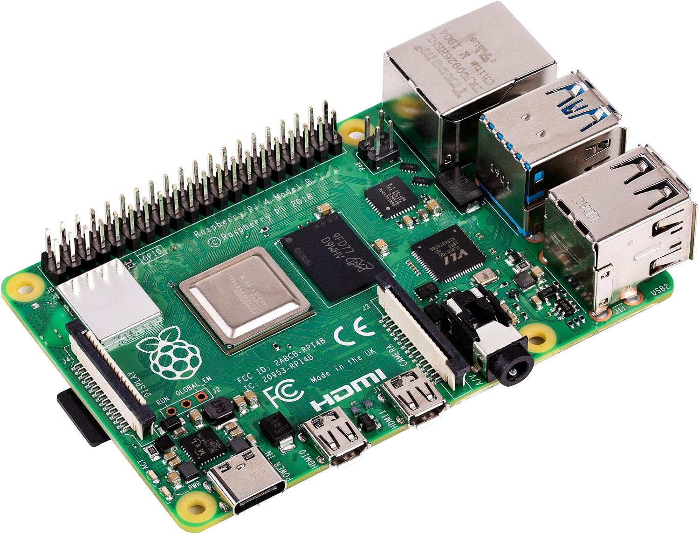
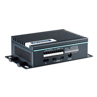
6. AWS Cloud Backend Architecture
☁️ Open AWS Cloud Operations Console (aws-cloud.html) ↗The cloud backend is built on Amazon Web Services (AWS) using an event-driven serverless architecture. Telemetry published by the edge gateway connects via mutual TLS (mTLS on port 8883) to AWS IoT Core, where an SQL-based Rules Engine routes messages into Amazon DynamoDB for time-series persistence and triggers AWS Lambda for automated anomaly detection and reverse actuation down to the field hardware.
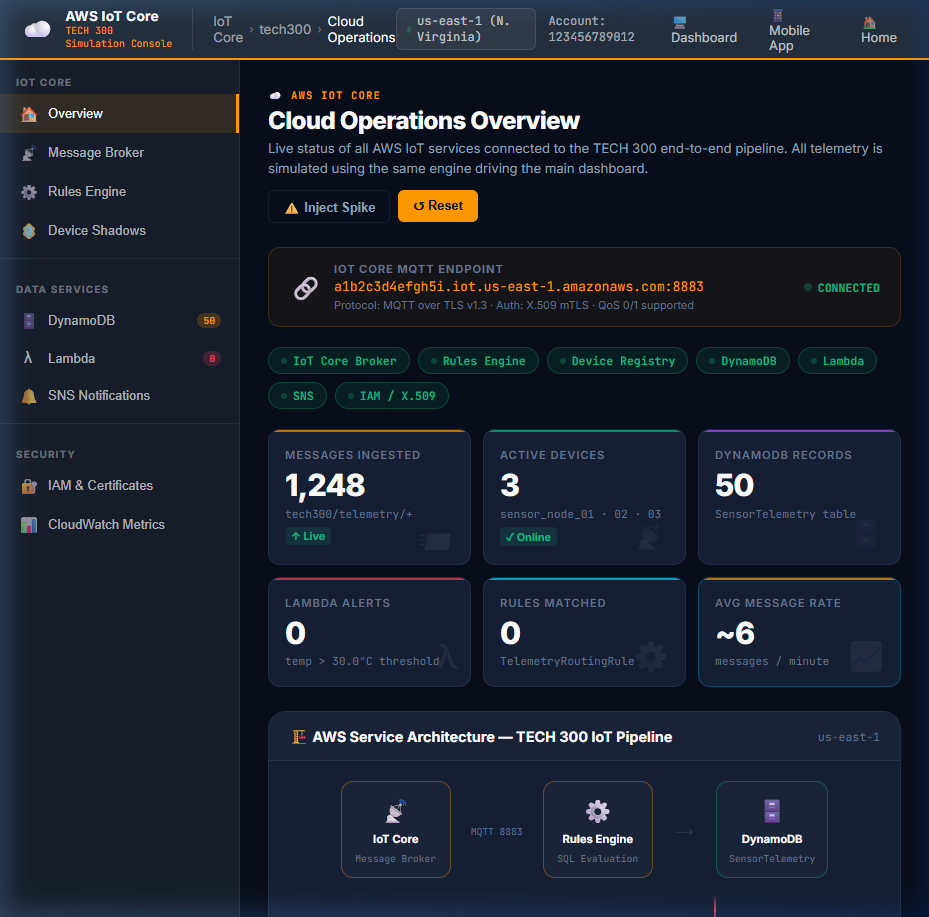
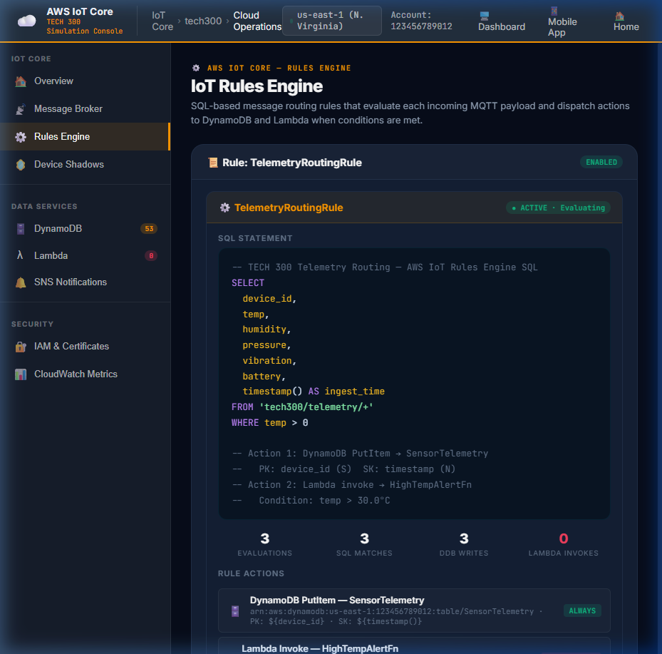
SELECT device_id, temp, humidity, pressure, vibration, battery, timestamp() AS ingest_time FROM 'tech300/telemetry/+' WHERE temp > 0) evaluating incoming payloads, dispatching PutItem writes to DynamoDB, and invoking Lambda alerting on temp > 30.0°C.
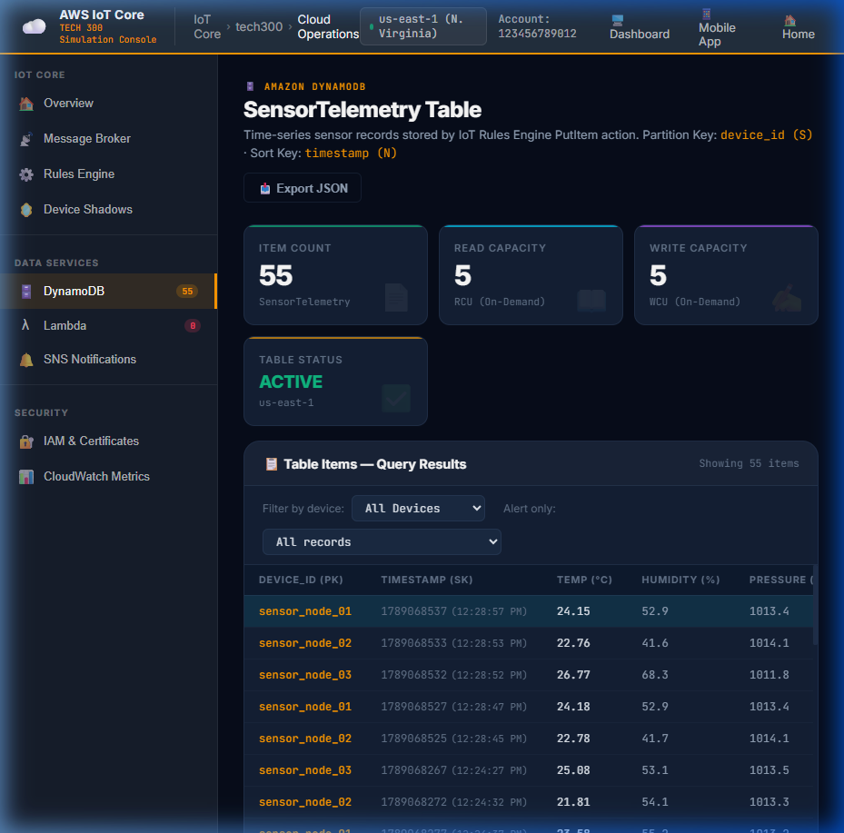
SensorTelemetry with partition key device_id (S) and sort key timestamp (N), displaying live incoming item rows, capacity units, and query filters.
7. Mobile & Presentation UI Styling Pattern
📱 Launch Live Mobile App (app.html) ↗
The presentation layer bridges field hardware telemetry and cloud intelligence to end users. In this project, the presentation tier was implemented around the IoT Sense Android Mobile App (app.html) designed for ergonomic touch-first field monitoring and climate actuation, complemented by the TECH 300 Web Operations Center (index.html).
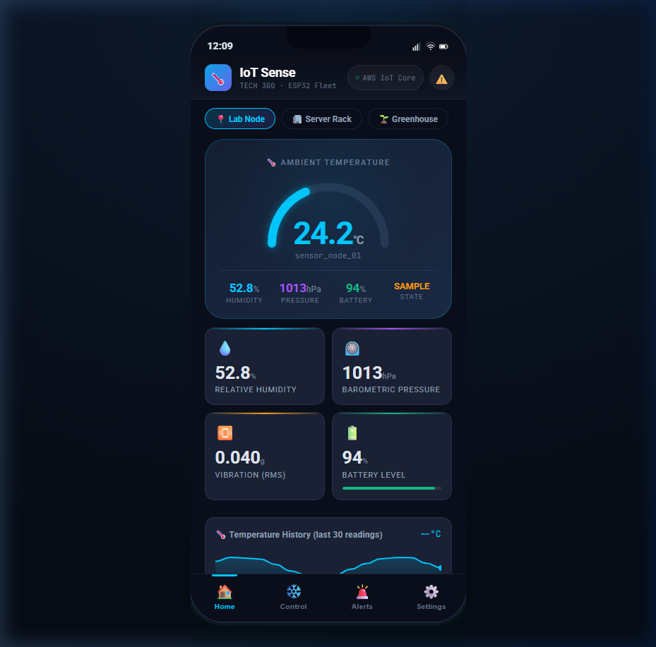
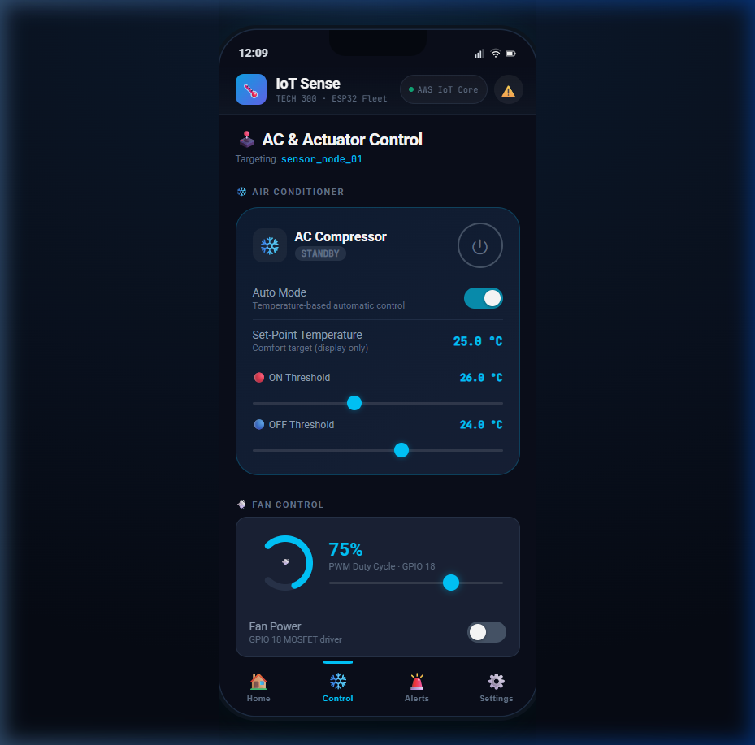
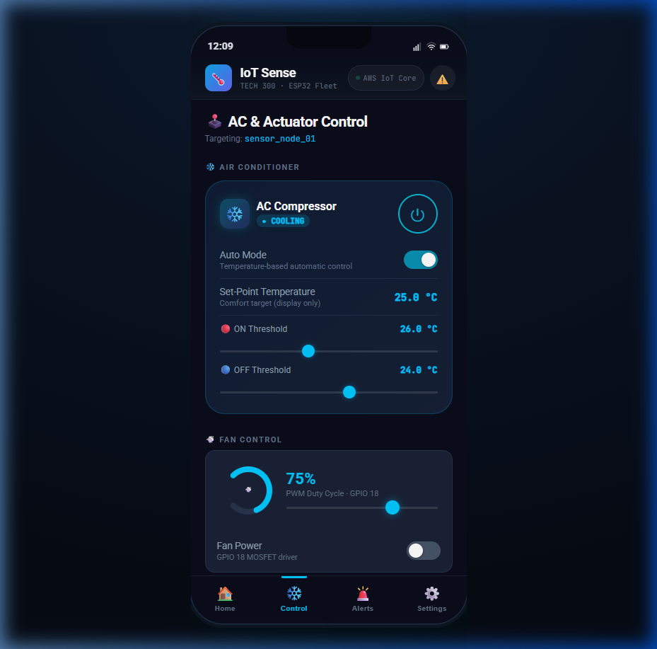
🎨 UI/UX Design System & Interaction Patterns
Engineered for modern 390×844px mobile viewports (iPhone/Android 6.1" display standard). Utilizes a 4-tab thumb-friendly bottom navigation bar (Home, AC Control, Analytics, Settings) with fixed status bar, notch accommodation, and 48px minimum touch target compliance.
OLED-optimized deep obsidian background (#0a0e1a) paired with multi-layer elevated cards (#1a2235) and glowing accent tokens: Electric Cyan (#00c8ff for cooling/link), Emerald Green (#10b981 for normal state), Amber (#f59e0b for heat/caution), and Rose Crimson (#f43f5e for alerts).
Dynamic SVG radial meter with stroke-dashoffset transitions, pulsing LED status beacons, haptic-style button click feedback, toggle switches with glow halos, and instant optimistic state updates corroborated by cloud Device Shadow acknowledgments.
When autonomous cooling mode is engaged, telemetry readings surpassing 26.0°C trigger an automated reverse command sequence through AWS IoT Core down to the ESP32 relay/fan, seamlessly represented on both mobile dial state and desktop actuation panels.
8. Required Software Platforms & Toolchains
Full-Stack Software EcosystemDelivering an end-to-end IoT demonstration system requires a cohesive software ecosystem spanning five specialized execution tiers: embedded microcontrollers, edge gateway hosts, cloud backend infrastructure, native mobile applications, and web diagnostic centers. The complete inventory of mandatory and recommended software platforms, runtime engines, SDKs, and development toolchains is detailed below.
| Tier & Domain | Software Platform / Runtime | Version / Toolchain | Core Packages & Role | Host Environment |
|---|---|---|---|---|
| 1. Perception Firmware | Espressif ESP-IDF / Arduino ESP32 Core | ESP-IDF v5.2+ / Arduino Core 3.0+ (C++17) | NimBLE-Arduino (BLE 5.0 GATT Server), Wire.h (I²C sensor bus), DHT-sensor-library, FreeRTOS kernel with RTC deep-sleep timers |
ESP32-WROOM-32 / Nordic nRF52840 (Bare-Metal / RTOS) |
| 2. Edge Gateway OS | Raspberry Pi OS Lite / Linux BlueZ | 64-bit Debian 12 (Bookworm) / BlueZ 5.66+ | Headless Linux kernel with Bluetooth subsystem, systemd service daemon management, D-Bus IPC, wpa_supplicant / NetworkManager |
Raspberry Pi 4 Model B (4GB) / Advantech UNO-220 |
| 3. Edge Middleware | Python Gateway Runtime & AWS SDK | Python 3.10+ / 3.12 (asyncio) | bleak (async BLE client for GATT characteristic polling/notifications), awsiotsdk / paho-mqtt (MQTT v3.1.1/v5 mTLS client), cryptography |
Linux Edge Host (venv or systemd daemon) |
| 4. Cloud IoT Broker | AWS IoT Core Platform | Fully Managed Serverless (MQTT 3.1.1/5.0) | X.509 Mutual TLS on Port 8883, Device Shadows (Digital Twin JSON), IoT Rules Engine SQL routing, Topic Namespacing (tech300/*) |
Amazon Web Services (AWS Cloud, us-east-1) |
| 5. Cloud Serverless | AWS Lambda & Serverless Compute | Python 3.12 / Node.js 20 LTS | Real-time alert evaluation (temp > 30°C), automated reverse command publishing to MQTT actuation topics, REST API payload handling |
AWS Serverless Execution Engine |
| 6. Cloud Database | Amazon DynamoDB & Amazon S3 | NoSQL Key-Value / Time-Series Store | Partition Key: device_id (String), Sort Key: timestamp (Number), sub-10ms read/write latency, cold archival telemetry bucket in S3 |
AWS Managed Storage Infrastructure |
| 7. Cloud API & Auth | Amazon API Gateway & AWS Cognito | REST HTTPS / WebSockets & OAuth 2.0 | Secure REST endpoints (GET /telemetry/history), AppSync GraphQL real-time push channel, Cognito Identity Pools for mobile authentication |
AWS Managed Edge API Services |
| 8. Mobile Client App | Android Studio & Android SDK | Target SDK 34+ (Android 14), Kotlin 1.9+ | Retrofit 2 & OkHttp 4 (REST API), Eclipse Paho MQTT (live WebSocket updates), MPAndroidChart (telemetry graphs), Material Design 3 |
Android Handheld Devices & Emulators |
| 9. Web Ops Center | Modern Web Platform (HTML5 / ES2024) | Native Modern Web Standards (No Node required) | Chart.js 4.4+ (streaming canvas time-series), BroadcastChannel API (zero-server cross-tab sync), CSS3 Custom Properties Design System |
Chromium / Firefox / Safari (Desktop & Presentation) |
| 10. Diagnostic Tools | Nordic nRF Connect & MQTT X | Desktop & Mobile Utilities | nRF Connect (BLE advertising/GATT inspector), MQTT X / AWS IoT MQTT Test Client (packet verification), Wireshark (traffic capture) |
Cross-Platform Developer Workstations |
- IDE: VS Code with Espressif IDF Extension or Arduino IDE 2.3+
- Flasher:
esptool.pyvia USB-to-UART CP2102/CH340 - OS: Raspberry Pi OS Lite (64-bit Debian, headless)
- BLE Driver: Linux BlueZ 5.66+ over HCI controller (
hci0) - Python Engine: Python 3.10+ with
bleak&paho-mqtt
- Broker: AWS IoT Core with X.509 mTLS Certificate Authority
- Compute: AWS Lambda serverless function runtime (Python 3.12)
- Storage: DynamoDB NoSQL (On-Demand auto-scaling) + S3
- APIs: API Gateway REST HTTP API & AppSync GraphQL
- Monitoring: CloudWatch Metrics, Alarms, and Log Groups
- Mobile IDE: Android Studio Hedgehog / Iguana / Jellyfish
- Language: Kotlin 1.9+ with Coroutines & Jetpack components
- Networking: Retrofit 2 + OkHttp 4 + Paho MQTT Client
- Visualization: MPAndroidChart 3.1+ (Real-time line charts)
- Web Presentation: Chart.js 4.4+, HTML5, BroadcastChannel API
- Security: OpenSSL 3.0, 2048-bit RSA / ECC SECP256R1 keys
- BLE Diagnostics: Nordic nRF Connect Mobile & Desktop
- MQTT Diagnostics: MQTT X GUI Client & AWS MQTT Test Client
- Traffic Inspection: Wireshark with Linux
btmonBluetooth monitor - Identity: Amazon Cognito User Pools & AWS IAM policies
9. Consolidated Hardware Bill of Materials (BOM) & Procurement Reference
Procurement & PartsThe consolidated bill of materials is structured across the perception layer, edge gateway infrastructure, power management circuits, and electromechanical actuation for provisioning a physical course prototype or multi-node laboratory testbed (3 active sensor nodes + 1 gateway hub).
| Item # | Category & Description | Manufacturer & Part # | Key Specifications & Interfaces | Testbed Qty | Unit Cost (USD) | Ext. Cost (USD) |
|---|---|---|---|---|---|---|
| 01 | Perception Node MCU | Espressif ESP32-WROOM-32D | Dual Xtensa LX6 @ 240MHz, 520KB SRAM, 4MB Flash, BLE 5.0 + 802.11 b/g/n | 3 | $5.80 | $17.40 |
| 02 | Precision Environmental Transducer | Bosch Sensortec BME280 | Temperature (±0.5°C), Humidity (±3% RH), Pressure (±1 hPa); I²C addr 0x76 |
3 | $4.50 | $13.50 |
| 03 | 6-Axis Inertial Motion IMU | TDK InvenSense MPU6050 | ±2g/±16g Accelerometer, ±250°/s–2000°/s Gyro; I²C addr 0x68, INT to GPIO 19 |
3 | $3.20 | $9.60 |
| 04 | Secondary Environmental Sensor | Aosong DHT22 / AM2302 | Capacitive humidity sensor & thermistor; single-bus digital on GPIO 4 | 1 | $3.80 | $3.80 |
| 05 | Rechargeable LiPo Battery Cell | PKCELL LP503450 | 3.7V 1200 mAh Lithium Polymer cell, JST-PH 2.0mm connector, internal PCM | 3 | $6.20 | $18.60 |
| 06 | Li-Ion Charge & Protection Module | TopPower TP4056 Type-C | 1A CC/CV linear charger with DW01A battery overcharge/overdischarge protection | 3 | $1.10 | $3.30 |
| 07 | Edge Gateway Host Computer | Raspberry Pi 4 Model B (4GB) | Broadcom BCM2711 Quad Cortex-A72 @ 1.5GHz, 4GB LPDDR4, CYW43455 BLE/Wi-Fi | 1 | $55.00 | $55.00 |
| 08 | High-Endurance MicroSD Storage | SanDisk High Endurance 32GB | Class 10, U3, V30 rating; rated for continuous SQLite write duty cycles | 1 | $11.50 | $11.50 |
| 09 | Official Gateway Power Adapter | Raspberry Pi Ltd SC0218 | 5.1V / 3.0A DC (15.3W) USB-C power supply with captive cable | 1 | $8.00 | $8.00 |
| 10 | Electromechanical Relay Module | Songle SRD-05VDC-SL-C | 5V 1-Channel optocoupled relay, 10A/250VAC contact rating; driven by GPIO 23 | 1 | $2.50 | $2.50 |
| 11 | Prototyping Solderless Breadboards | Elegoo MB-102 (830 Point) | Dual power distribution rails, 0.1\" pitch tie points with aluminum backing plate | 3 | $4.20 | $12.60 |
| 12 | Passive Component & Decoupling Kit | Generic Electronics Kit | 4.7kΩ metal film pull-ups (x10), 100nF MLCC bypass (x10), 10µF bulk capacitors (x5) | 1 | $4.50 | $4.50 |
| 13 | Jumper Wiring Assortment | Breadboard Jumper Wires | 65-piece multi-color M-M & M-F DuPont ribbon cables (20cm & 10cm) | 1 | $3.60 | $3.60 |
| 14 | AWS Cloud Infrastructure & APIs | Amazon Web Services | IoT Core (mTLS 8883), DynamoDB on-demand, Lambda, API Gateway (Free Tier eligible) | Cloud | $0.00 | $0.00 |
| Total 3-Node + Gateway Physical Testbed BOM: | $159.90 | |||||
* Note: Prices reflect average authorized distributor volume rates (DigiKey, Mouser, Adafruit, Amazon Business) as of Q3 2026. The industrial alternative Advantech UNO-220 gateway evaluated in Section 5 adds ~$280.00 for hazardous/factory deployments requiring fanless IP40 metal DIN-rail housings and wide 10–36V DC inputs.
10. Phased System Bring-Up & Hardware Fault Testing Checklist
5-Stage Integration ProtocolTo systematically bring up the end-to-end IoT demonstration system without cascading multi-tier debugging issues, engineering teams and students must follow this rigorous 5-stage sequential verification checklist:
- Flash
main.cppusingesptool.py --port /dev/ttyUSB0 write_flash. - Verify 115200 baud UART serial monitor boots FreeRTOS SMP kernel on both cores.
- Execute automated I²C bus sweep: verify ACK received from MPU6050 at
0x68and BME280 at0x76. - Measure oscilloscope rise time on SDA/SCL: confirm \(t_r < 300\,\text{ns}\) with 4.7kΩ pull-ups.
- Verify BLE 5.0 advertising frames using Nordic nRF Connect mobile application.
- Verify Linux BlueZ Bluetooth subsystem is active (
systemctl status bluetooth). - Launch
gateway_daemon.py: observe automated BLE connection & GATT subscription. - Verify binary BLE packet decoding into valid JSON telemetry objects.
- Network Partition Test: Disconnect gateway WAN interface; verify telemetry records divert into local SQLite store-and-forward table (
iot_buffer.db). - Reconnect WAN: verify accumulated records flush upstream to cloud in FIFO sequence.
- Validate X.509 device certificate, private key, and Amazon Root CA1 on gateway host.
- Test mTLS handshake to AWS IoT Core custom endpoint over port 8883.
- Verify MQTT ingestion under topic namespace
tech300/{device_id}/telemetry. - Inspect DynamoDB table: confirm record insertion latency < 15 ms with valid partition/sort keys.
- Verify AWS Lambda rule execution and CloudWatch log output on payload evaluation.
- Connect Web Operations Dashboard (
index.html) and Android Mobile App (app.html). - Verify real-time Chart.js streaming gauges update synchronously via BroadcastChannel.
- Trigger reverse control command: toggle Relay (GPIO 23) from presentation UI.
- Verify downlink MQTT command route: Cloud → Gateway → BLE GATT Write → Physical Relay.
- Benchmark round-trip actuation latency: confirm sub-200 ms end-to-end turnaround.
- I²C NACK Fault: Disconnect SDA pin; verify firmware logs
0x02timeout and recovers. - Thermal Runaway: Inject >30°C temperature anomaly; verify AWS Lambda triggers automated AC cooling within 2 seconds.
- Vibration Shock: Inject >0.6g accelerometer spike; verify high-priority security alarm toast dispatches.
- Brownout Protection: Simulate VDD < 3.4V; verify ESP32 saves persistent state before sleep.